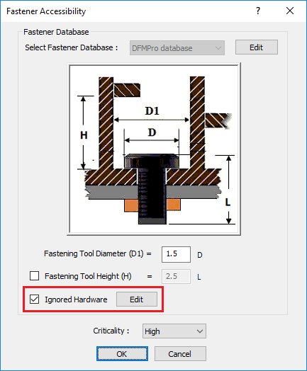
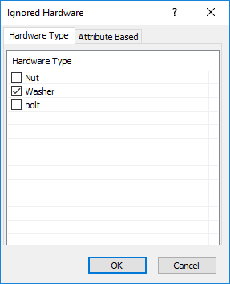
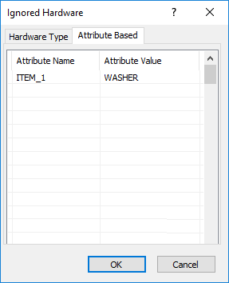
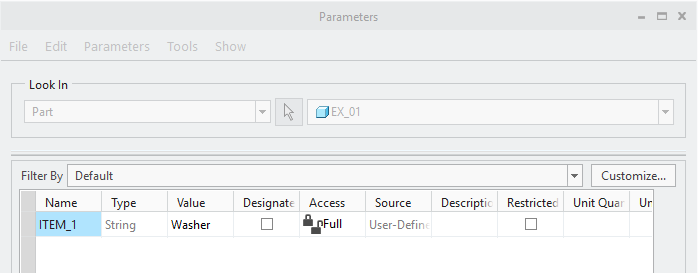
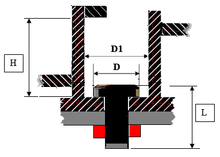

ユーザーは、工具の高さと直径を入力することで、アセンブリで使用されている留め具のアクセス性をチェックできます。
留め具にアクセスするために、締結工具のための十分なスペースが確保されていることを確認する必要があります。これは、締結または取り外しの容易性を高めます。これは、組立および分解（組立性・分解性）を考慮した設計を実現するためのベストプラクティスです。
このルールを使用するために、ユーザーは以下の入力を提供する必要があります:
留め具 - ルールを検証するための留め具名称。
留め具は ハードウェアデータベース を通じて追加する必要があります。
ワッシャ、ねじなどが、留め具のアクセス性を妨げるコンポーネントとして報告される可能性があります。ルール構成ダイアログボックスで、Ignored Hardware オプションをクリックして、そのようなハードウェアを無視してください。
ユーザーが Ignored Hardware チェックボックスを選択すると、Edit ボタンが有効になります。Edit ボタンをクリックして、ワッシャ、ねじなどのハードウェアタイプを構成するか、または次の画像に示すように CAD パラメータ／属性を定義してください。

ユーザーが Edit ボタンをクリックすると、次の「構成」ダイアログボックスが表示されます。
Hardware Type タブでは、ハードウェアデータベース に設定されている留め具の利用可能なハードウェアタイプの一覧が表示され、ユーザーは無視するハードウェアタイプを一覧から選択できます。

Attribute Based タブでは、ユーザーは必要に応じて CAD パラメータ／属性の名称および値を構成できます。

ルールは、属性名については完全一致の文字列で比較されます。属性値については、コンポーネントの実際の属性値に含まれる部分文字列として存在する、ユーザー指定の値と比較されます。
例として、このルールは次のような文字列型／パラメータ型に対応します:
属性名：ITEM_1
属性値：Washer

このチェックは、ハードウェアデータベースを更新する場合にのみ必要です。
デフォルトでは、締結工具の直径（D1）が設定されています。ユーザーは必要に応じて値を構成できます。
デフォルトでは、締結工具の高さ（H）が設定されていますが、このチェックボックスはオフになっています。ユーザーは必要な値を構成できます。
デフォルトでは、Ignored Hardware オプションはオフになっています。

D = 留め具ヘッド直径
D1 = 締結工具直径
H = 留め具工具高さ
L = 留め具長さ
ユーザーは、Excel シートテンプレートに存在するハードウェアデータを Import ボタンを使用して一括でインポートできます。
ハードウェアを構成するには、ハードウェアデータベース を参照してください。
注記:
必須フィールドは Hardware Name（P1 列）です。
このルールは、トップレベルのアセンブリ部品に対して、DFMPro 設定に基づいて実行できます。
Ignored Hardware ダイアログボックスで利用可能な Hardware Type タブの必須フィールドは Hardware Type（H1 列）です。
ユーザーは、コンポーネント名を構成するためにワイルドカード文字を使用できます: